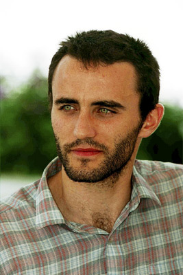

#10989 Die Unglaubliche Reise des Fakirs, der in einem Kleiderschrank feststeckte
 gesehen am 18.04.2019
gesehen am 18.04.2019

 IMDB-Wertung: 7.0 / 10
IMDB-Wertung: 7.0 / 10  Metascore: 0
Metascore: 0 
Der junge Fakir Aja lebt in Mumbai, wo er sich als Straßenkünstler seinen Lebensunterhalt verdient. Seit frühester Kindheit beschäftigt ihn dabei die Frage, wer sein Vater war, doch erst nachdem seine Mutter gestorben ist, stößt er auf einen ersten Hinweis. Dieser führt ihn nach Paris, wo er bald die bezaubernde Amerikanerin Marie (Erin Moriarty) kennenlernt. Doch bevor sich die beiden näher kommen können, verschlägt es Aja in einem Kleiderschrank eines Möbelhauses auf eine unfreiwillige Reise durch ganze Europa, bei der zahlreiche absonderliche Abenteuer erlebt und skurrile Gestalten trifft und dabei den Kontinent auf sehr eigentümliche Weise kennenlernt.
Jahr: 2018
Dauer: 95 Minuten
FSK: 6
Land: Frankreich Studio: Square OneTonspuren: DTS - ,
Untertitel: Deutsch, Englisch,
Auflösung: 1080p (1920x804) Größe: 8929 MB
Genre: Drama, Komödie
Regisseur: Ken Scott
Drehbuch: Romain Puértolas, Luc Bossi, Ken Scott, Romain Puértolas, Jon Goldman
Soundtrack: Nicolas Errèra
Darsteller:
- Dhanush als Ajatashatru Lavash Patel
- Bérénice Bejo als Nelly Marnay
- Erin Moriarty als Marie
- Barkhad Abdi als Wiraj
 Gérard Jugnot als Gustave
Gérard Jugnot als Gustave- Ben Miller als Officer Smith
- Abel Jafri als Captain Fik
- Sarah-Jeanne Labrosse als Rose
- Seema Biswas als
-  Stefano Cassetti als Alfredo
- Mar Sodupe als Inspector Fernandez
- Kay Greidanus als Pieter
- Amruta Sant als Siringh
- Christian Bronchart als Border Force Dancer
- Uwamungu Cornelis als Baleki
- Adonis Danieletto als Manager of the department store
- Gandharv Dewan als Cousin 2
- Edwin Gillet als Jerry
- Omkar Ketkar als Cousin 1
- Philippe Legros als Businessman
- Pauline Maréchal als Rose's girlfirend
- Daniele Nisi als Paparazzo
- Hearty Singh als Young Aja
- Jeroen Van der Ven als Bearded Policeman
Datei: X:\2018(N-Z)\Unglaubliche Reise des Fakirs, der in einem Kleiderschrank feststeckte, Die (2018, FSK6, 1920x804).mkv seit 16.04.2019
Festplatte: HD 2018(G-Z)-2019(A-Z)
 Es gibt insgesamt 172 Filme in der Gruppe '2018(N-Z)'
Es gibt insgesamt 172 Filme in der Gruppe '2018(N-Z)'